Surely this is the most complicated part of assembling Photoduino. Not by the number of components, but you have to have something more than skill at welding and it is very important to respect the polarity of the sensors. For this part you need the necessary components and also some tools like scissors, cutting pliers, wire strippers, soldering iron and tin, a gas burner and a “third arm”, but you can do without but will be much more complicated.
Sensor wires
If you are using the kit, you should has a cable like the following picture of about 5 meters long. The cable has 3 RCA plugs at each end. The sensors you are going to assemble in this tutorial are the basics audio, light, infrared barrier and impact. In the case of infrared barrier, the emitter will always be an IR LED, but you can use two different receivers. One based on a photodiode and another based on a phototransistor. The first is more precise about the width of the light barrier but its reach distance is smaller (about 10-20cm) highly geared for use with water droplets or small objects. The other, based on phototransistor, has the potential to create longer barriers (about 100cm), but obviously the beam accuracy is lower because the light expands in the distance. If you need a major barrier but very accurate, you should use a laser as a transmitter (not included in the kit) and visible light sensor (LDR) as a receiver.
Then, we will need 6 wires. One for the microphone, one for the shock sensor, one for the IR emitter diode, one for the visible light sensor (LDR) and two for the IR receivers based on photodiode and phototransistor. For getting these 6 cables must cut the cable of 5 meters by two. If you cut it in a half will have 2.5 m of cable for each sensor. If you think is too long for your needs should be cut to desired length.
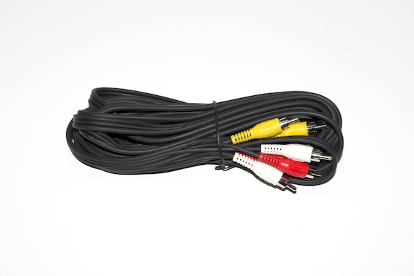
Once cut the cable of 5 meters, you have two cables with 3 connectors each as the following photo.

Now you can divide each cable which are attached to get 6 cables each with one RCA connector.


How to strip and prepare each cable
The next thing you do, you have to do for each sensor in almost the same way. Basically it is to peel and prepare each wire with heat shrink pieces (although the photos are blue or yellow, you probably have them in black) with which sealed and insulated the connections you make.
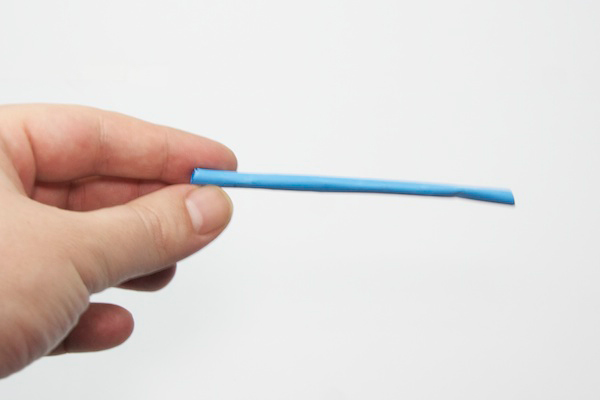
Note that the 6 cables you have now, the two with yellow connector are slightly thicker than those with white or red connectors, so for the yellow you need to use the larger diameter heat shrink included in the kit, and with the other (red and white) the medium diameter . The easiest way to do is thread the cable through the heat shrink before peeling and see if moves softly or not.
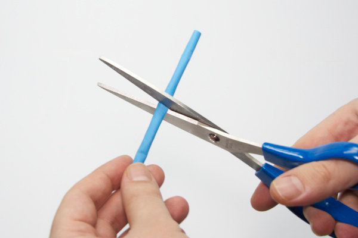
Before you strip the wire, put a piece of about 4 or 5 cm. Later this will be the closure and isolation of any connection to the sensor.
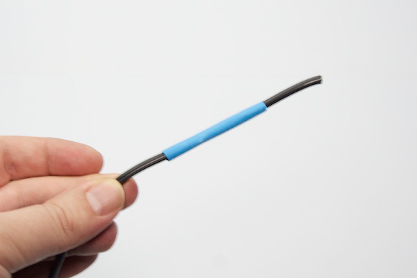
Strip a piece of about 3 cm. Be careful to no break the copper wires that go inside.

With the help of your fingers, put together all copper wires as you see in the pictures below.
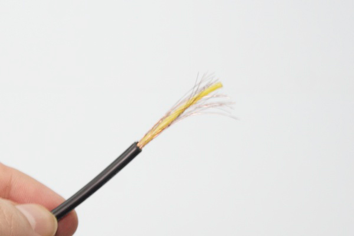
Now you can strip the center wire with the stripper. With about 5 mm is enough.
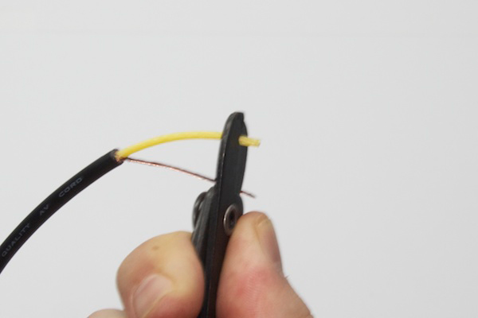
Previously we have made a piece of heat shrink to cover everything. Now you need to put another piece of heat shrink of the smaller diameter of 1’5cm long (view the next photo) to prevent the sensor wires makes contact between them.

Sound sensor
For the sound sensor we will use the electret microphone. This microphone has a polarity which is very important respect. In the next photo you can see how you connect it correctly. The contact labeled in the photo as SIGNAL you must solder to the central wire (yellow) and the other labeled as GND (copper in sight). Make sure the piece of heat shrink is as far as possible to the area where you are going to solder, because this material is contracted with the heat.
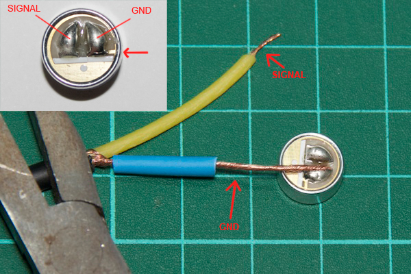
You can get help with some pliers to get the right position to soldering then you so you can use both hands to grab the soldering iron and tin. Note that it is very important that when a weld is cooling, do not move your contacts or it may look bad.
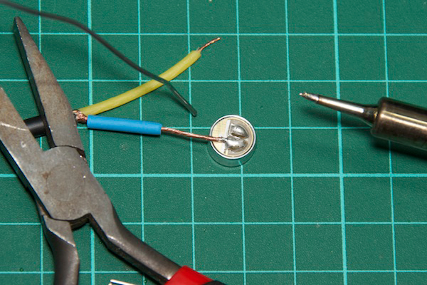
After each contact welded correctly, move the heat shrink closest to the welding and with the flame of a lighter contract the heat shrink while moving the burner. You’ll see how quickly the material contracts adjusting the cable. Let it cool slightly before handling.


Do the same with the large piece of heat shrink moving it to cover the connections and heat it with the lighter.
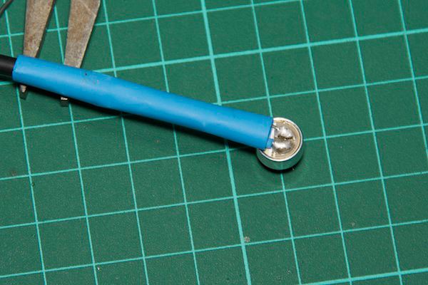
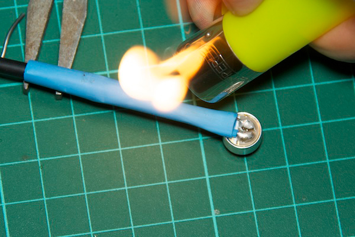
The result should be like you see in the next picture.
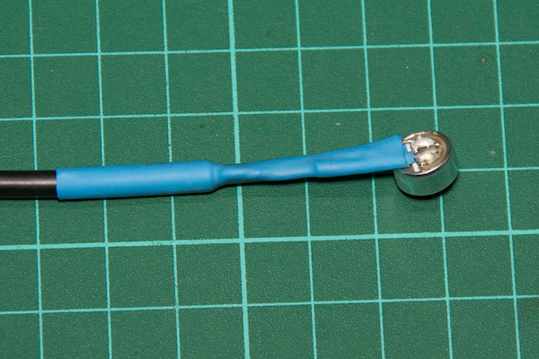
Now you have finished your sound sensor.
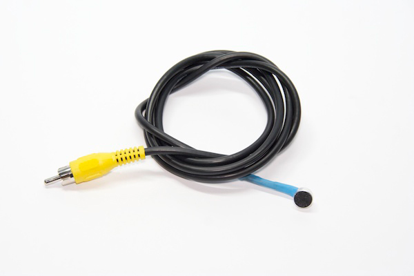
Shock sensor
Just as you did before, you have to prepare the cable stripping and putting the necessary pieces of heat shrink to insulate the connections later. Note that the finest heat shrink is in the central wire.
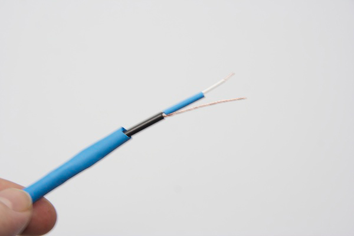
For the shock/impact sensor we are using a flat piezoelectric speaker you see in the image below that generate small voltages when pressed or beaten. Its polarity is very clear because the wires are red and black. The red wire should be soldered to the central and the black to the outer cable (copper in sight).


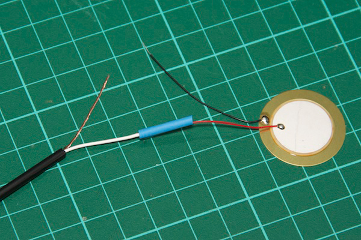
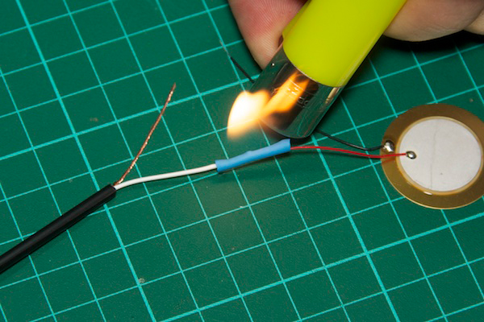

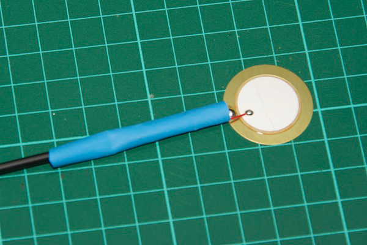

Now you have your shock sensor finished.
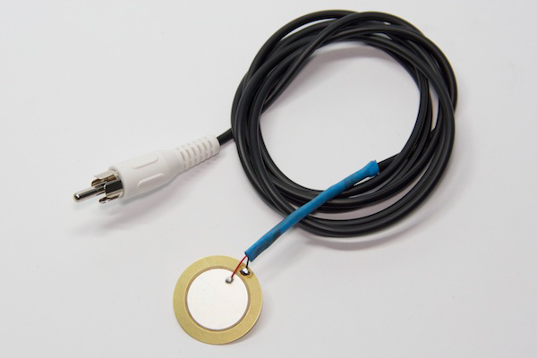
Infrared LED
To make the infrared barrier we need a infrared LED (IR LED) as emitter.
As you already done in previous steps, you should prepare the cable with heat shrink pieces. In this case use a “third articulated arm” as you see in the picture below. Will help you to position it correctly when you are soldering.

The LEDs have polarity and is indicated by the shape of the base of the LED. One side of the base is flat, indicated as FLAT (-) in the following image which corresponds to the cathode and the other side is rounded, indicated as ROUNDED(+) in the following image which corresponds to the anode. You solder the center wire to the ROUNDED(+) and the FLAT(-) side to the outer wire.


Now you have the infrared emitter.

Visible light sensor
The visible light sensor will useful to create laser barriers to fire the camera or the flash when the light exceeds a threshold. For this sensor will use the LDR (Light Dependant Resistor). The LDR in a resitor which resistance value varies depending on the light, so do not have polarity. As you already done in previous steps, you should prepare the cable with heat shrink pieces.
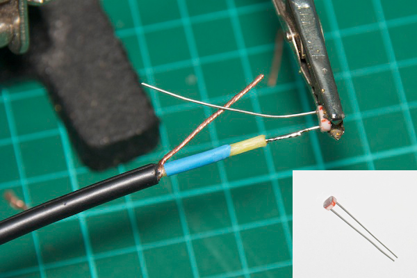
 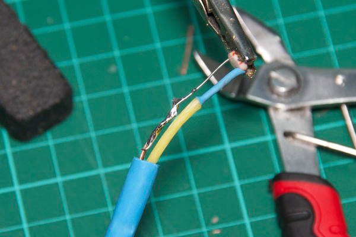
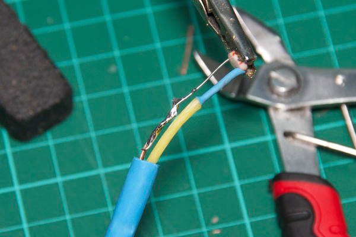
Now you have the visible light sensor finished.
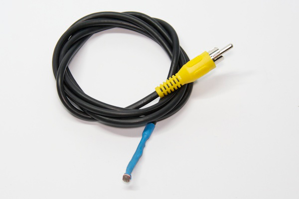
Infrared sensor based on phototransistor
As mentioned earlier, you can choose between two types of IR receiver as needed. First we are going to assemble which is based on a phototransistor. The phototransistor and photodiode are very similar, but the phototransistor is little smaller. The color of phototransistor's lens may be different (often clear) from the one shown in the image. The phototransistor polarity is also indicated by the shape of the base (flat or rounded). You solder the FLAT side (-) to the central wire and the ROUNDED side (+) to the outer wire as in the image below. As you already done in previous steps, you should prepare the cable with heat shrink pieces.
 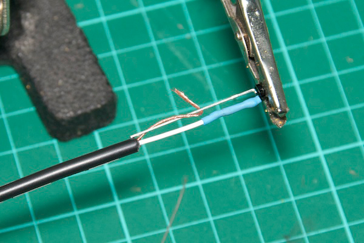
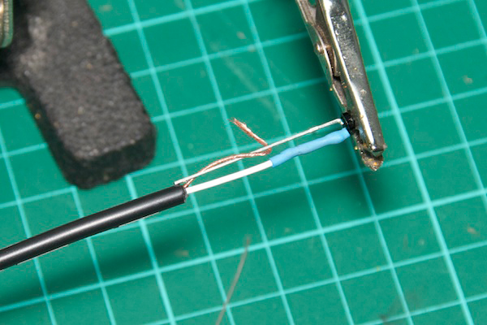
Now you have finished the first IR sensor.
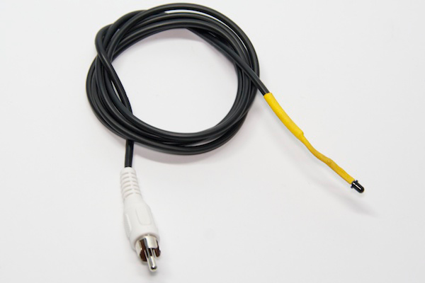
Infrared sensor based on photodiode
The assembly of this sensor is very similar to the other IR sensor. The photodiode is a bit larger than the phototransistor and has the same polarity. You can see the polarity in the image below. The flat side (labeled as FLAT) to the central wire and the rounded side (labeled as ROUNDED) to the outer cable. As always, prepare before the cable with the heat shrink pieces.


Now you have finished the second IR sensor.

Congratulations, you have completed all sensors :)